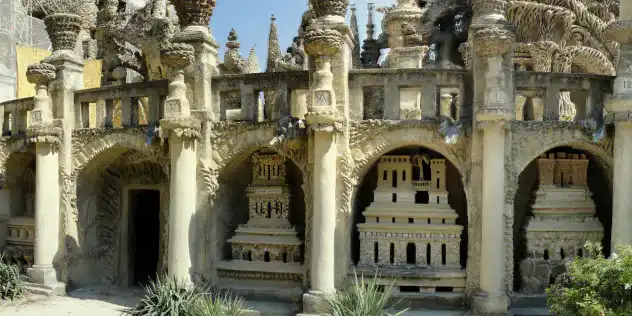
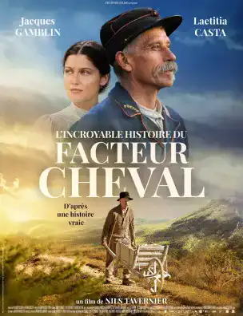
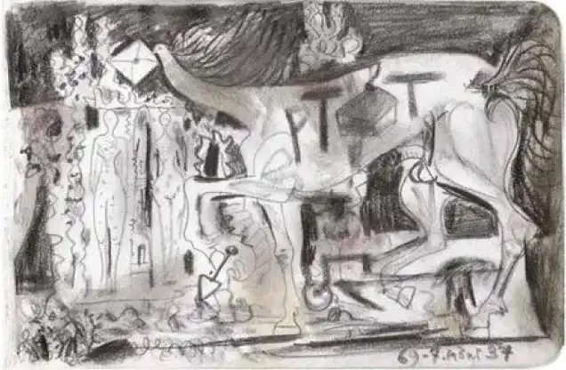

A self-taught man
Born in 1836 in Charmes-sur-l’Herbasse (France), Joseph Ferdinand Cheval, from a poor family, left school at 12 years old. He finds himself orphaned while still a minor, then, later, he becomes a baker’s apprentice.
After being exempted from his military service, Joseph got married at 22 years old. In search of work, he leaves Hauterives and becomes a farmer, then a baker. His first son died when he was only 1 year old, while two years later, his second son Ferdinand Cyril was born.
In 1867, Joseph became a letter carrier after a contest, but unfortunately, a few years later, a new tragic event happened in his life: the death of his wife, aged 37. He remarried 5 years later with Claire-Philomène-Richaud, who gave birth to his daughter Alice-Marie-Philomène.
The genesis of the project
It all began during one of his working tours: almost falling when he came up against a stone, the Factor Cheval was then attracted by the strange shape of this one, which he named "stumbling stone".
"Since nature wants to do the scullputre, I will do the masonry and architecture."
Finding the next day stones just as beautiful, an idea germinated in his mind, because, seeing that nature without having "learned" to sculpt, produces such beautiful stones, he could himself also produce an architectural work although he had never studied in this sense.
Thus, accompanied by his wheelbarrow, the letter carrier Cheval collects daily singular stones to build an imaginary palace. The 33 years of his life that he devoted to its construction testify to his perseverance.

But why such a success?
Classified as a historical monument, this palace contains a wealth of details, one can see animals, as well as mythological creatures, not to mention architecture from every continent. A fountain, once functional, as well as the "stumbling block", the latter being the origin of this building, are also part of the decor.
The Postman Cheval achieved the incredible architectural feat of integrating caves, temples, a draft of the White House, a Swiss chalet and a mosque into his imaginary palace. He really drew from different styles and different eras.
Maybe this man dreamed of making great journeys, of discovering the world, but, unable to do so, he probably tried to bring these distant landscapes to him.
He was inspired by Emile Roux Parassac's poem "Ton idéal, ton Palais" to name his work. He also wrote poetic texts himself, which can be seen on several facades of his Palace.


"One man's work" is the signature of an exceptional letter carrier who knew nothing about architecture and who, for more than thirty years, dedicated his life to the realization of the Palace of his dreams.
His story has left such a mark on people's minds that she is invoked in literature, cinema, and even in song. It is, for the artists, a way to pay homage to him.
For example the first film dedicated to him is a short documentary by Ado Kyrou, in 1958. Then more recently, it is Niels Tavernier who stages his story in the cinema.
Finally, in the painting, we can find a tribute by Picasso.
Classified as a historical monument for naive art in 1969 by André Malraux, the Ideal Palace is, according to him, the only naive architecture in the world.
This man's profile corresponds to the themes I wanted to address in my site. I find his journey very inspiring, he gives an interesting life lesson.
His courage and his patience are remarkable, to spend so many years to realize something in a self-taught way is really impressive. Especially since people of his time found him eccentric, he probably looked like a lunatic to some, but that didn't stop him in his tracks, he had a goal and he wanted to achieve it until the end. Having left this world almost a hundred years ago, the Postman Cheval, whose story is unusual, continues today to receive recognition throughout the world.
Similar Places

The tomb of Postman Cheval
France
1922
Khajuraho Temples
India
1986

Angkor Vat Temple
Cambodia
12th century
Kandariya Mahadeva Temple
India
11th century

Banteay Srei Temple
Cambodia
10th century
Links 
The website of the historical monument « Le Palais Idéal du Facteur Cheval »
Website of the Explor Games®, "The Quest of the Three Giants" at the Ideal Palace of the Facteur Cheval